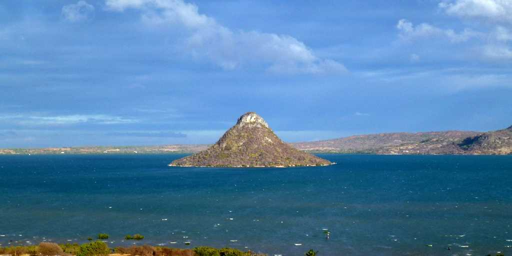
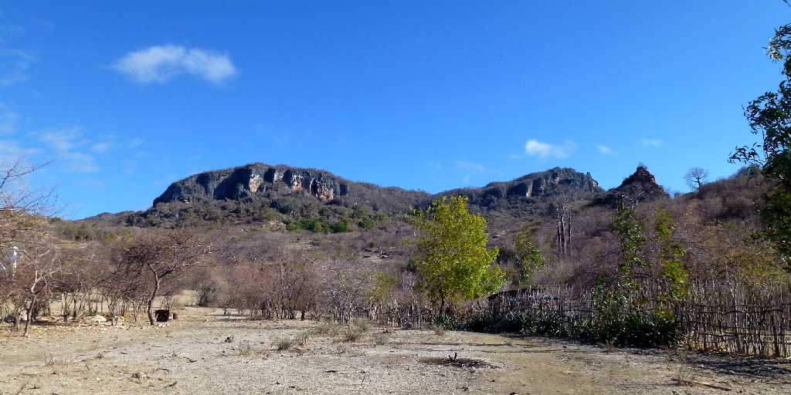
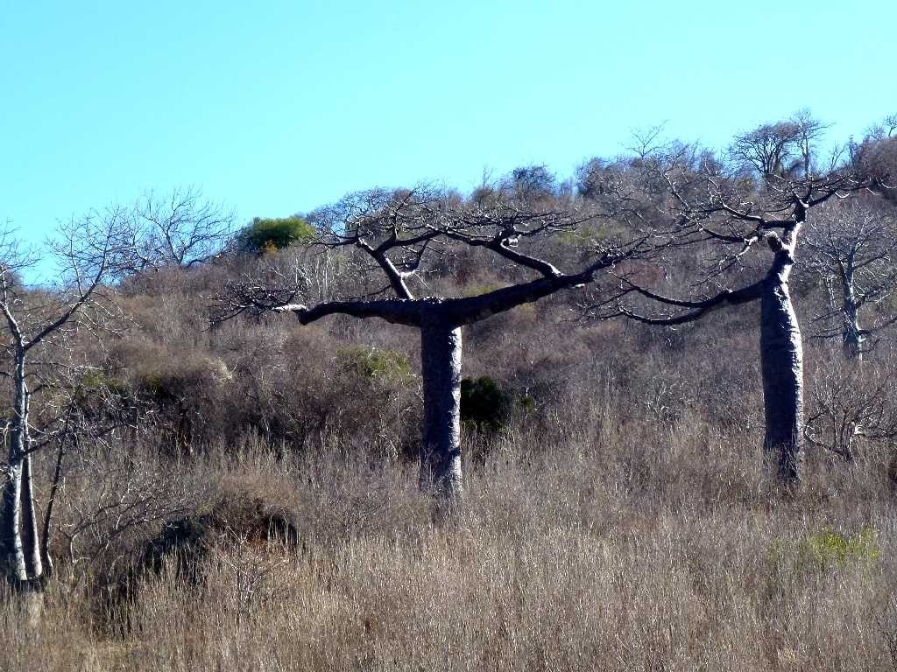
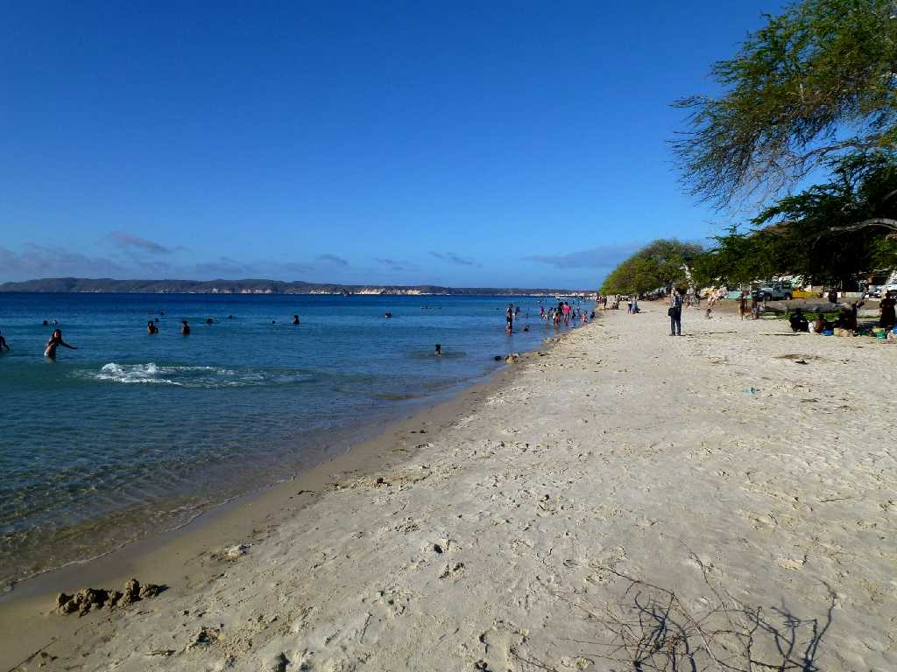
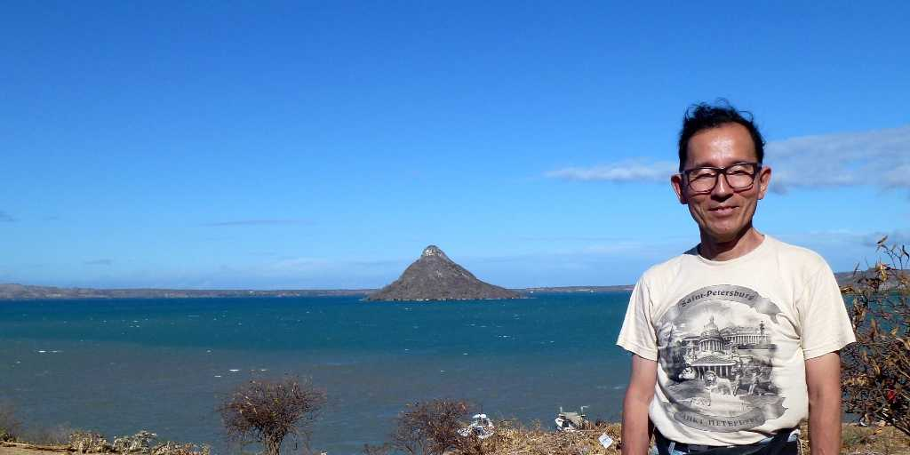

Pain de Sucre Antsiranana (Diego Suarez)
砂糖の島と呼ばる綺麗な円錐形の美しい島を囲むディエゴの湾はリオデジャネイロの湾に次いで世界で２番目に大きな湾と云われている

Montagne des Francais Antsiranana
ディエゴの湾の奥にあるフランス山

Baobab Antsiranana
フランス山の山麓にＴ字型のバオバブがある 珍しいシュワレスエンシスと云う種類のバオバブ

Ramena Beach Antsiranana
ラメナビーチは近年地元の人々のリゾート地として整備された海水浴場

October 20 2013 Antsiranana